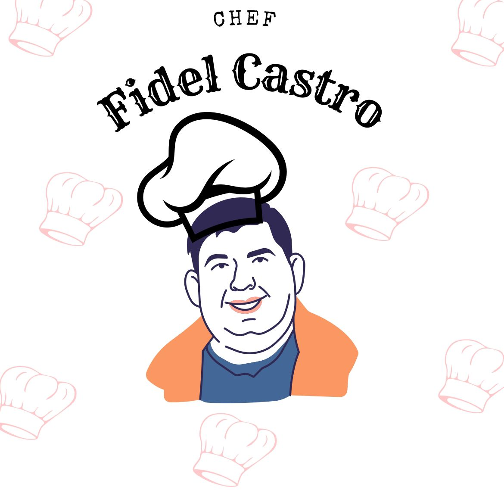

Português: O Restaurante La Carte é uma inciativa de estudantes do IFRN-Campus Canguaretama. Surgiu em 2025, como forma de tornar paupável e aplicável o conhecimento acadêmico difundido nas dependências da grade de desenvolvimento web. Atualmente está em processo de teste e aprimoramento.

Fidel Castro (1926-2016) foi um revolucionário cubano, presidente do Conselho de Estado e do Conselho de Ministros, chefe das forças armadas e secretário geral do Partido Comunista de Cuba. À frente de um grupo de guerrilheiros, fez com que surgisse em Cuba o primeiro estado socialista do hemisfério ocidental. Fidel Castro Governou Cuba durante 49 anos. No dia 24 de fevereiro de 2008, o regime autoritário de Fidel caiu, e numa tentativa de viver uma vida normal, ele abre o Restaurante La Carte seguindo em frente como chef de cozinha.
